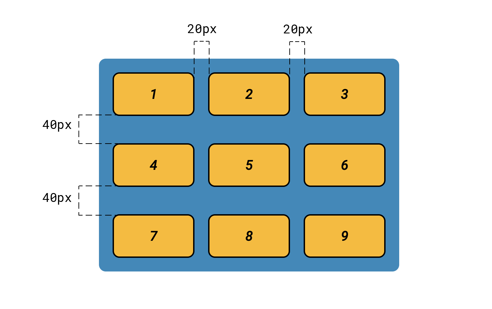
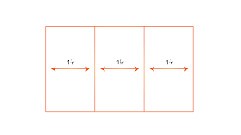
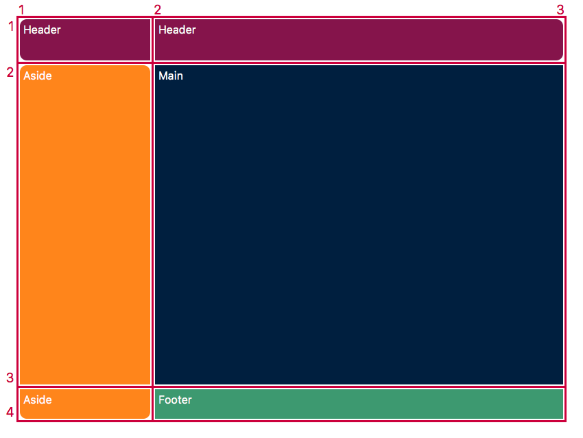

Modulo Grid
Css Grid Layout
Comúnmente se han utilizado varias estrategias de CSS para diseñar las páginas web. Primero, se usó table, luego float. Position y display. Pero todos estos métods omiten funciones importantes (Centrado vertical, por ejemplo).
Grid es un sistema de diseño bidimensional vasado en cuadriculas que, en comparación con otro sistema de diseño web del pasado, cambia por completo la forma en que diseñamos las interfaces de usuario
Grid fue creado especialmente para resolcer los problemas de diseño A diferencia del flexbox el cual es unidirecional tiene diferentes casos de uso, grid permite definir un esquema de cuadricula
Soporte
Desde marzo de 2017, la mayoría de los navegadores ofrecían soporte nativo sin prefijos para CSS grid
- Chrome (inculido en Android)
- Firefox
- Safari(Inclido en iOS)
- Opera
- Internet explorer 10 y 11, con prefijo –ms-
display:grid;
Para empezar se define como un elemento contenedor como una cuadricula con:
Display:grid;
Todos los hijos direcctos del contenedor automaticamente en elementod del grid
Grid-column
Las lineas verticales de elementos grid son llamadas columnas
gap
Column-gap
Los espacios ente las columnas se pueden ajustar con la propiedad column-gap
Row-gap
Los espacios entre los rows se pueden ajustar con la propiedad row-gap

gap
La propiedad gap resume las propiedades anteriores
Por ejemplo:
gap: 10px 20px;
fr
Fr es una unidad de medida de CSS grid
Es la abreviatura de fracción y se usa para especificar fracciones del espacio disponible en una cuadrícula CSS
Es util cuando se quiere distibuir el espacio restante después de colocar elementos en la cuadrícula.
Ejemplo:
Grid-template-columns: 3fr 6fr;
Divide el espacio disponible en 9 partes que asignan tres fracciones a la primera columna y 6 a la
segunda columna
Grid-template-areas
es una propiedad de CSS grid que permite definir un esquema de cuadrícula usando nombres de área personalizados en lugar de especificar las líneas de la cuadrícula con grid-template-rows y grid-template-columns.
Grid-column-start Grid-column-end
Determina la ubicación de un elemento de la cuadrícula dentro de la cuadrícula refeencia a líneas de cuadrícula específicas